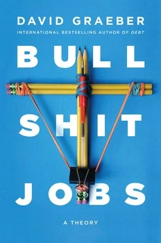
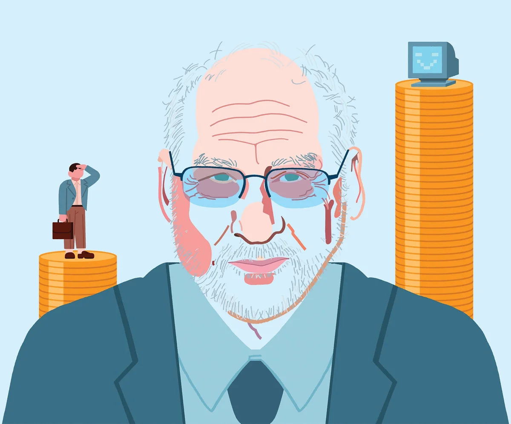
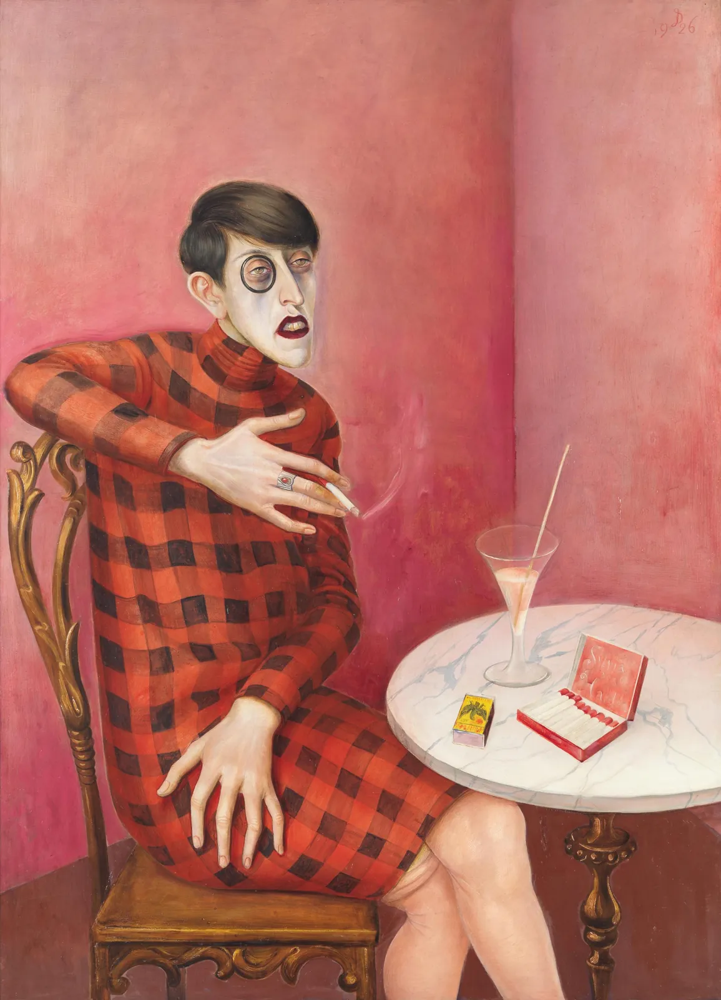
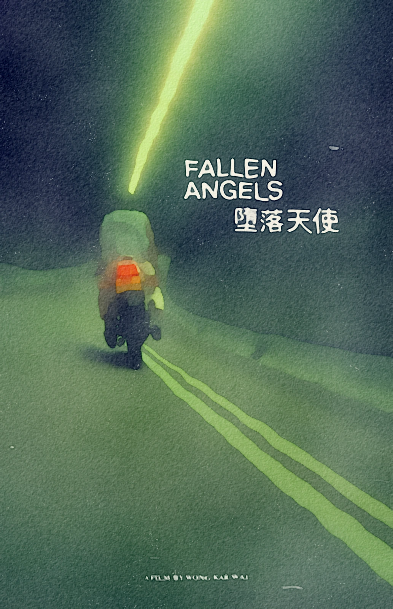
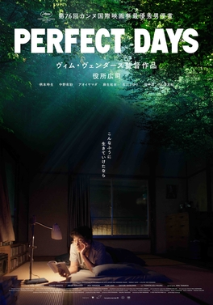
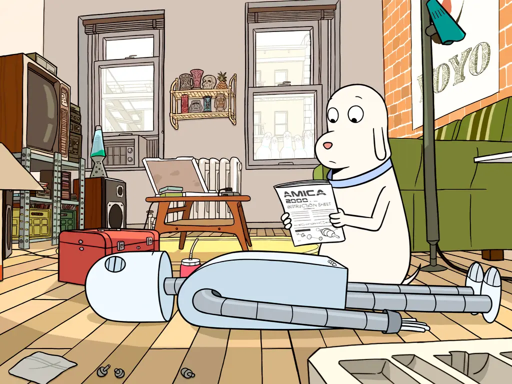

These days, this is what I think about, both superficially and deeply. Warning: extremely subject to change.
I've researched in-depth how AI will upend employment as a means to an end. David Graeber's 2018 book Bullshit Jobs has informed significant parts of my thinking. Note: this statement is not an endorsement of certain jobs being replaced or being preserved (although I'm happy to opine about this topic in a reasonable way.)

Related, I am interested in questions, including but not limited to things, like: what happens when capital power overcomes labor power? If AI is both considered property of capital... and labor that produces goods and services, who is capital and who is labor? Who gets to "own" AI? What happens to the labor theory of value when labor no longer generates said value? How should the distribution of wealth (and the neoliberal cultural narratives around said distribution) change? The list goes on.

Most people are sleeping on Otto Dix, who really flies under the radar. But then again, which artists really survived Weimar Germany?

I'm not the world's biggest Abstract Expressionism connoisseur, but I've always been compelled by Kirchner's work, especially his Berlin series.

Breakfast is my favorite meal of the day. I have a slight preference for a Japanese-style breakfast. Here's one of my favorite Instagram home chefs.

That being said, I've enjoyed breakfast in every country I've visited. Every country's breakfast has delighted me.
I love eggs! Scrambled, devil'd, from a quail. I really don't play about this. Please. Buy me eggs.

Long live Wong Kar-wai—particularly his chef-d'œuvre (IMHO). There's more to Hong Kong cinema than "In the Mood for Love," jukebox slow dances and all that.

There are TV shows, and then there are historically devastating stories of brutal yet time-honored conformity, transformed into a postmodern medium. Shogun is one of them.
Slice-of-life projects really move me, as there is nothing more intimate than seeing another person's daily goings-about. But it's also... really boring. Making the most mundane also the most emotional moments in a scene? A rare accomplishment.

What a beautiful piece of animation art. The story, the characters, the disappointment, the loneliness, the stuff life is made of. Not least of which: a lava lamp!
